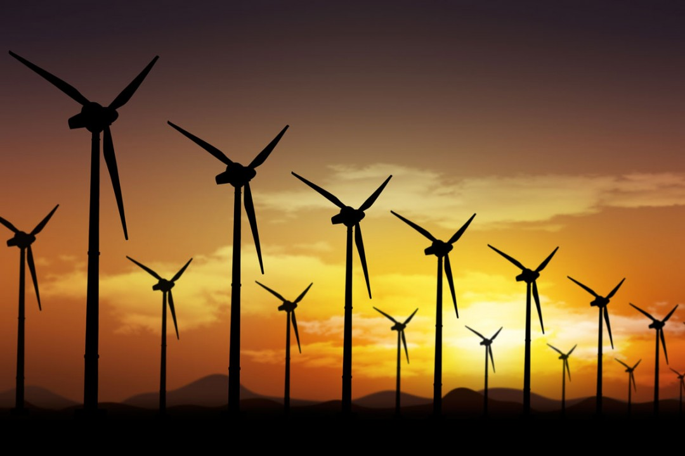
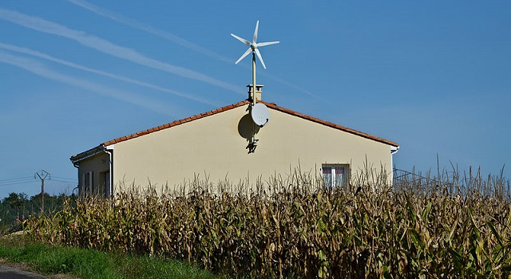

Créer son énergie renouvelable ?
Réduire votre consommation est trop compliqué ? Créez votre propre énergie renouvelable ! C'est de plus en plus simple...
Comme dit dans le précédent article, notre planète se meurt. Petit à petit, nos consommations électriques, de gazs et autres influent énormément. Malheureusement le monde dans lequel nous sommes est un monde numérique. Tout se fait de plus en plus sur ordinateur, en ligne, ce qui ne joue pas du tout en faveur de la planète. Et si elle meurt, nous mourons aussi, donc nous devons préserver la Terre.
Une surconsommation inévitable
Le monde numérique dans lequel nous sommes nous oblige à polluer. Aujourd’hui si l’on veut se déplacer nous nous servons d’internet. Si nous avons un article à acheter, nous regardons sur internet. Même certaines créations de papiers administratif sont faites en ligne.
Tout est aujourd’hui connecté et cela va au désavantage de la planète. Nous savons que la pollution créée par un mail est retirée en utilisant 10 arbres pendant une journée. Lorsque nous voyons ça nous nous demandons alors combien cela pollue de regarder une vidéo sur Youtube ? Combien cela pollue de la mettre en ligne ? Quand nous savons que 400 heures de vidéos sont postés par Heure sur le site il y a des questions à se poser. Mais tout cela est tellement ancré dans la société que changer serait impossible. Une réduction est peut-être possible, mais l’arrêt de tout est inimaginable.
Les énergies renouvelables
La solution la plus logique à ça sont les énergies renouvelables. L’énergie vient des centrales. Ce sont elles qui polluent pour nous lorsque nous nous baladons sur internet par exemple. Et si l’énergie était crée par nous même ?
De nombreux moyens de créer sa propre énergie renouvelable existent. Une éolienne de particulier. Des panneaux solaires sur votre toit. Ou encore une hydro turbine. Ces moyens vont vous permettre de vous alimenter par vos moyens. Il suffit de transformer la force motrice du vent ou de l’eau. Ou bien de récupérer l’énergie du soleil. Ces énergies sont renouvelables.
Cela veut dire qu’elles ne polluent pas et peuvent se régénérer à l’infini.
Créez votre énergie
Le seul problème de ces énergies est que ce n’est pas aussi puissant que les fossiles. Pour entièrement équiper votre maison de panneaux, il en faudra environ 16.
Sans cela vous serez encore dépendant de votre compteur électrique. Évidemment tout le monde ne possède pas les conditions nécessaires pour ces moyens (le mieux est sur une maison).
Mais un petit balcon est suffisant pour accueillir jusqu’à 2 des moyens. Combinés ils ne suffiront pas pour tout le foyer.
Cela pourra déjà réduire la quantité d’électricité venant d’énergie fossile utilisée.
Vous avez les moyens et la place pour créer votre énergie ? N’hésitez pas et rendez vous sur des sites professionnels afin de vous renseigner.
Batman, le justicier anti-écologie
Ce projet vous a plu ? Vous
souhaitez lire de nouveaux articles
similaires ? Allez voir les autres
projets de mon groupe !